The
Chief Curator is in the mountains, of course, which is why the
club keeps the assistant curator around to do the actual museum
work.
The
Chief Curator is in the mountains, of course, which is why the
club keeps the assistant curator around to do the actual museum
work.Alaskan Alpine Club
Alaska Mountaineering Museum
Fellow mountain climbers, colleagues of the museum world, and bored internet surfers....
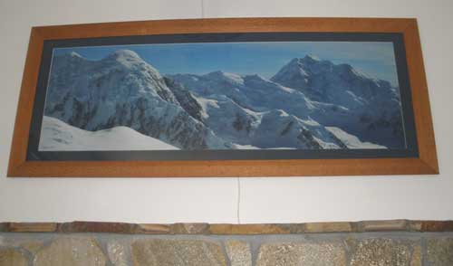
Okay youse guys, this aint no smuck operation we got going here. Now just consider that the most independent minded, cannot agree on the same route or mountain, mountain climbers on the rock are Alaska mountain climbers, and Fairbanks Alaska is as far as civilization goes north in this corner of the world. So the fact that they had enough of some mysterious attributes to actually get a permanent headquarters, blew the socks off some of them who are still bewildered.
And the fact that the history of Alaska mountain climbing is actually being cobbled together in a museum in the Club HQ, at however glacial speed, is befuddling social scientists and psychologists in snow caves around the world.
Consider that no few Alaska climbers are so bereft of ego that they do not publish their climbs, because the climbing was of sufficient substance in itself, and serious adventures are common stuff, and maybe because they are illiterate. So trying to get them to send some token climbing equipment with their name and a date on it, that they used in the mountains, and a photo of them, for the good of history, science, apple pie and idle conversation value in a hundred years, is as difficult as trying to suggest the consideration of reasoning to George Bush and Barak Obama.
So if you know any Alaska climbers, including the escapees who climbed in Alaska, just abscond with the ice axe they are no longer using, put their name and date on it, a photo of them, any account of their climbing in Alaska, and send it to the Club HQ for the museum or decor, for the good of history, science, apple pie and idle conversation among the climbers in a hundred years.
Oh, so the above photo by Christine Poteate, is the new 5 foot long main HQ art item, above the stone mantle where the heating stove used to be. Rather entertaining. The mountains are somewhere in the Alaska Range, but not in the local playground south of Fairbanks, so there have been some divergent claims as to which mountains they are. But the routes are enticing. That aint no plain brown frame. It is Australian lacewood. Up close its lacy grain rivals the photo for attention.
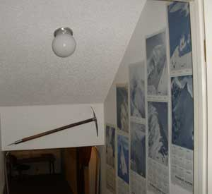
And that is the entrance into the main museum room, with some old club calendars.
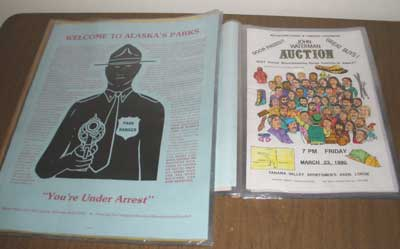
Some of the posters in their new vinyl covers.
Each of those faces on one of the Waterman Auction posters are very accurate drawings of the local climbers at that time, by Bob Grunditz the local adventure crowd artist.
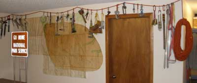
Some of the walls of the museum and "conference center".
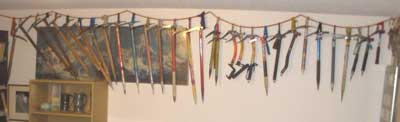
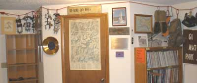
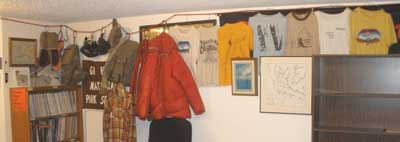
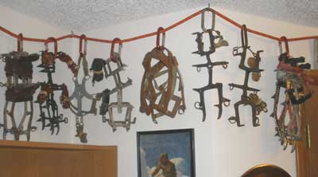
A museum created by actual mountain climbers, with no grants from the stinkin government or any other establishment institutions or wealthy benefactors? Not possible. Well, except in Fairbanks Alaska. If you see a climber's name in this museum, she or he will be a common climber's mountain climber, and usually of some outrageous character in some regard, admitted or otherwise.
Remember, you are a member of the Alaskan Alpine Club if you say you are. And spend your dues money on climbing gear because we do not even give you a membership card because you are a member if you say you are. That really miffs the establishment folks who want their club members to claim some establishment-friendly credentials to flatter their own credentials or to send money to compensate for the thinking inability of the leaders.
You can send money to the Alaskan Alpine Club, if you tell us what you want us to do with it, or it might get spent on the next poster ragging the stinkin National Park Service Mountaineering Cops. Well, what actual damaging crimes are being perpetrated by climbers in the mountains, to warrant the waste of tax money on all those law enforcement trained, armed cops called National Park Service mountaineering rangers who are only in the mountains to arrest the climbers who do not kowtow to the Park Service paperwork drill and pay the "fees"? Well?
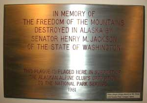
Consider those stodgy old museum curators fluffing about dusty displays of old stuff, and hoarding things away in the basement. And consider what is normal for museums, with their officious directors, officers, staff, organizations and funding programs. And check out the American Alpine Club museum in the lower 48, that glorifies the National Park Service party line that somehow results in government money slipped to the AmerAC museum.Have you ever met a REAL mountain climber who would say that climbers should be arrested by the Park Service if they don't pay the Park Service police a $350 fee (Denali) and grovel through bureaucratic paperwork, for the RIGHT to walk (climb) on their own public land described as a mountain? Have you wondered why the US mountaineering clubs that support the National Park Service's budget-excuse climbing regulations (hassles) and lucrative permit fees get so much government grant money? If the person you are talking to says he or she supports Park Service mountaineering regulations, or is a member of club that does, she or he is as much a mountain climber as Commander-in-Chief George Bush was a military leader.
Now consider the unorganizably independent minded Alaskan mountain climbers who are climbing mountains right now, or course, or they would not be climbers, reveling in the absolute mountaineering anarchy of the non-park Alaska mountains, ragging the pitiable government chaps and commenting on the geology of the route. The climbers, destitute as usual, squander what little they have on climbing mountains, and laugh robustly in snow caves. A club museum? A club museum?
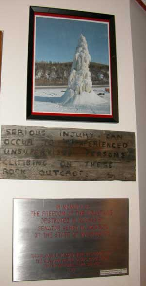
All the stodgy old museum curators would give dearly for the opportunity to START a museum. It is like starting the climb, the path ahead fraught with peril, and the results yet unknown. But the concept of starting a museum without government funding, institutional grants and prestigious names of the realm as benefactors, befuddles the bumbling sorts whose perception of a museum is that of a museum, rather than a statement of Alaska mountain climbing and its universal concept around the world.
Yes folks, and here we have the ice axe display. Ice axes are made in various calibers and are used mostly for protection from bears and park rangers. Occasionally a climber will stick it in the snow for a photo op. Next we have the famous John Waterman's actual main climbing shirt, Andrew Embick's rock shoes, Chuck Comstock's wool scarf and chalk bag. Don't look in that chalk bag. Those chaps were each awarded the internationally famous Alaskan Alpine Club Otzi The Iceman Award.
The ice axe from the Mountaineering Club of South Africa, at the opposite corner of the world, was used by many climbers who did not once consider that it would end up in Alaska, of all places. Climbers who live in corners of the world understand climbers who climb in corners of the world.
In a hundred years or so, when the museum is still a party and information exchange center for local and visiting climbers, amid an array of cool old climbing stuff, the curator damn well better be a climber, or if you find these words in an internet archive, you may publicly rag the club into running the curator out into the mountains, not to return without a good story and photos for the next climber party at the Alaska Mountaineering Museum. That party might be around the Mountain Dragon fire pit out back of the HQ.
In a hundred years, how a mountaineering museum was actually started among independent minded Alaska climbers who are normally still arguing about what route to climb, at the summit, may be the primary display of the museum.
If you are an Alaska climber, or were, or a club member anywhere in the world, or have some old climbing stuff of your parents, or your ex, and you think a real Alaska mountaineering museum made by real climbers is a cool idea, send your or their old ice axe, even if you have to buy a new one and put your name and date on it. In a hundred years, today's stuff will be cool old stuff. Or any such climbing things with a story or two. Rock stuff is cool. No, we do not want any more old double boots or rock shoes. Climbers somehow think their worn out boots are historic just because they shared so much misery.
Because the unique Alaskan Alpine Club has members around the world, any member who sends some cool climbing stuff with your name and date on it, can see it in the museum, or use it for a climb when you stop by on your next Alaska climbing trip. Owners can reclaim donated items any time, to climb of course, or to tell more stories.
You can be assured that our dear and benevolent friends in the government, and their colleagues, will not be assisting with this project. This is a genuine climber adventure, for climbers whose minds understand the concept of mountaineering freedom.
AND LAUGH. Some of the National Park Service mountaineering rangers are just milking the Park Service for awhile, and privately express appreciation for the Alaskan Alpine Club. They hold their fellow rangers, the idiot Park Superintendents and the environmentalists in expressed contempt, for the same reason the more-thinking Army privates hold war and their idiot officers in contempt while the central authority claims their support. Some of the park rangers describe the rampant corruption of the Park Superintendents, the personal maliciousness of the other police-mentality park rangers, and the laughable gullibility of the Sierra/American Alpine Club members. Have you ever met a REAL climber who would say that climbers should be arrested if they do not pay the Park Service mountaineering police who are only there to arrest the climbers who do not pay the police and grovel through budget excuse paperwork hassles?
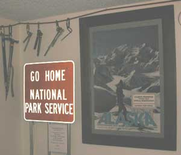
The mountaineering regulations do not prevent mining, timbering, hotel building, road construction, hunting or littering in the parks. The mountaineering regulations are designed for the National Park Service's primary program... lucrative taxation by fraudulent citation. They create an intimidation-based Police State, void of human rights and freedom, supported by unquestioning environmentalists and malicious park police who cannot understand the words of this paragraph.
So after you quit your Park ranger job (or before), you can add that fact to the ice axe you donate to the Alaskan Alpine Club museum, and laugh robustly with fellow climbers.
The metal, Go Home National Park Service sign in the photo is identical to the one anchored on the summit of Mt. Drum, in the Wrangell St. Elias National Park Gulag in 1981. Mt. Drum is "The People's Monument To The Freedom Of The Mountains". The fabric sign (below) was displayed on the summit of Denali. The engraved plaque (above) is the same as the one with Senator Tsongas' name, anchored on the summit Mt. Drum. The Alaska mountain climber rabble-rousing, trouble-causing, arm waving and general carrying on in the early 1980's involved intriguing events and remarkable achievements that created knowledge of inordinate value. Those events were a noticeable part of Alaska and US mountaineering history, at the core of the ongoing human quest for freedom from malicious idiots with government jobs and police guns for brains. And that is the rare collector's item Alaskan Alpine Club poster described elsewhere on this website. The frame is high quality oak, found in a dumpster of course.
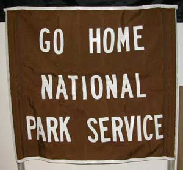
Inherent to the eternal human quest for freedom - the human rights of individuals to make their own decisions that do not damage other people, Alaska will soon enough become and independent nation, because the war mongering Police State Washington DC government has bankrupted itself, priced itself out of the market for government, and is lost in its petty squabbles over how to GET MORE MONEY. The malicious National Park Service with its thugs will be gone. And the Alaskan Alpine Club museum will indicate the leadership qualities of mountain climbers in that regard. Go ahead, our good friends the government supporters, adopt more federal laws and impose more taxes and fees to keep those Alaskans and your children's future under the heel of the Central Authority.
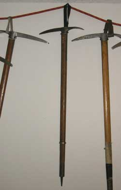
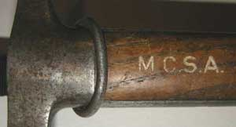
The Mountaineering Club of South Africa ice axe.
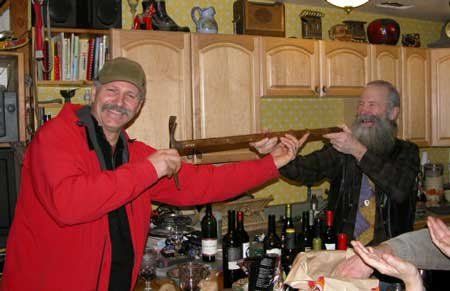
After great travels and the efforts of a gaggle of mountaineers, the official final handing off of the famous Mountaineering Club of South Africa historic ice axe, to the Alaskan Alpine Club assistant museum curator was performed with great hoopla, ceremonious dissertations and a few glasses of wine at BarbecueNight.com, just around the corner and through the trees from the Alaskan Alpine Club HQ.
The
Chief Curator is in the mountains, of course, which is why the
club keeps the assistant curator around to do the actual museum
work.
The ice axe from our good friends in the other corner of the world was facilitated by Gerhard van Wyngaardt, Honorary Secretary of the Mountaineering Club of South Africa (MCSA), and Mike Scott, curator of their Capetown Section museum. MCSA member Julia Wakeling carried it to an American Alpine Club climbing competition in Utah. She handed it off to Charlie Sassara, an AmerAC sort, right there in an AmerAC party, and survived. Charlie is the owner of the hot Alaska Rock Gym, in Anchorage. He brought the ice axe back to Anchorage, and handed it off to AknAC member Karl Schauer, attending an Anchorage university for some sort of education that interferes with his skiing. He handed it off to his Mom, Karen, down in Anchorage for some sort of event. She allowed John Schauer to bring it to BBQnight, where it was trusted to the guy with the beard to get it over to the Alaskan Alpine Club HQ. He wore a tie with a club tie tack for the event.
This ice axe was a veteran of many climbs in the Drakensberg Range of South Africa, during the 1950's and 60's. It was used by Robin Sandell on Tiquimani in Bolivia, and a dozen other Andean mountains during the 1963 MCSA Andean Expedition. The ice axe is made in Switzerland, with a Sass-Almagel stamp. It is also stamped with Robert Lawrie Ltd. London W.1. The shaft is embossed with MCSA. If those guys knew it was going to end up at the Alaska Mountaineering Museum, they would have brought it themselves and used it to climb more mountains.
The best wine of the evening was raised in a toast to the Mountaineering Club of South Africa and all of its cool climbers. They are always welcome at the Alaskan Alpine Club HQ.
The famous missing Alaskan Mountain #13 newsletter.
So back in 1984 the regular Alaskan Mountain newsletter assistant editor got too busy waving his arms, pounding his fists, shouting, pontificating, rabble rousing, trouble causing, and generally carrying on ragging the stinkin government. He did not have time to get the next issue of the club newsletter printed. He cranked out a couple little semi-newsletters, of announcements, but not the real club newsletter with the climbing stories.
So the task got delegated to a series of assistant assistant editors who were climbers, who were therefore climbing so they did not do any printing. Climbers are not of much value for anything except climbing, and that is the way it should be.
Eventually after no few years one of the assistant assistant editors gathered up the various old stories in the "next newsletter" file, and put them on a disc, and printed the story section of the newsletter, and gave it back to the assistant editor. Mistake.
The assistant editor was still rabble rousing, on account as the stinkin government was stinking even more, regulating out of existence climber rights and other human rights as fast as government dirtbags could, so George Bush could start his Ego Gratification Wars with less citizen opposition and more seized tax money. The $200 per climber climbing tax to walk up Denali put a tidy little sum in the US Treasury, enough for a few more bombs.
So the newsletter sat in a cardboard box on various shelves in various sheds.
Then in November 2008 the Club's assistant new museum and library curator and librarian started going through the old cardboard boxes to put things on the new shelves from the dumpsters. He was not sure what this was at first, because he had not seen it before.
He promptly made a cover, by cutting out a mountain scene photo page from a real magazine, taped on an Alaskan Mountain #13 title, and put it in the Prestigious Alaskan Alpine Club World Headquarters Library. The only place in the world you can read Alaskan Mountain #13 is at the prestigious Alaskan Alpine Club world headquarters museum library, or something like that. That will be the case until Google uploads the "room view" option with full scans of everything printed, in every room of every structure in the world. Next week.
This aint no schmuck operation the Club's got going here.
More book shelves...
We got a new tall book shelf what looks just like those fancy high end shelves from some lawyer's office. Genuine walnut colored paper covered chip board. Got it from The Mall (dumpsters), with most of the shelves. Had to saw off a couple inches at the bottom where it had been sitting in water. Dug through the snow out back to find a couple more shelves that will look pretty good with some brown paint. In the future they may declare the museum to be a dumpster history museum. Well, who would know about that tower in Pizza if it had not started leaning? If you send some climber stuff that fits on shelves, it might even rate the walnut colored shelves.
Don't forget to loan the museum your spouse's old climbing gear, or he or she may start climbing again.
This page cobbled together by the museum assistant to the curator out in the Alaska Range.
The Club
Climbing Concepts 1
Climbing Concepts 2
Climbing Concepts 3
Gullible Climbers
Member Number
Mountain Rescue Fund
Wilderness Classic Race
National Park Service
Posters and Calendars
Posters 2
Photos
Events
Ice Towers
Ice Towers Web Cam
03-04 Ice Tower
04-05 Ice Tower
05-06 Ice Tower
07-08 Ice Tower1
07-08 Ice Tower2
07-08 Ice Tower3
07-08 Ice Tower4
07-08 Ice Tower5
07-08 Ice Tower6
07-08 Ice Tower7
07-08 Ice Tower8
Other Ice Towers
Links